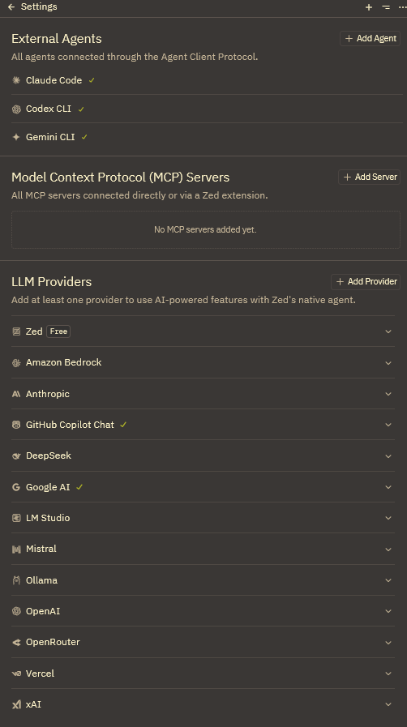

Zed IDE setting.jsonのすすめ
Zedのsetting.jsonの筆者の最低限のおすすめ設定を共有します
こんにちは！パン君です。
今回はZedエディタで発生するワークフロー全てに関係する setting.json について筆者のおすすめ設定を記述します。
はじめに
settings.jsonの設定方法について軽く説明をしておきます。
vscodeを触った経験がある方は大概はわかるかと思いますが、念のため....
settings.jsonとは
エディタの動作を定義するためのファイルです。
テーマ、フォント、IDEレイアウト、IDE UI、拡張機能の設定などなど、様々なカスタマイズや設定が可能です。
※また keymaps.json など他にも設定を可能にする物がいくつかあります。
設定方法
[Crtl + Shift + P]でコマンドパレットを開き、Zed: settingと入力すると添付画像のようなポップアップが出てきます。

設定方法の種類
settings で終わっているのは 各種の設定画面上で設定ができます。
settings file で終わっているのは 各種の settings.json スクリプト内で設定ができます。 (プロパティなどはドキュメント参照推奨)
設定範囲の種類
影響の優先順位が低い順に羅列していきます。
後の方に設定されている場合は、設定内容がそっちの上書きされます。
Default Zedを利用すると設定される内容
account 多分登録しているZedアカウント、もしくはGithubアカウント依存の設定内容
project プロジェクト毎に設定する内容
基本構文
基本的に下記の構文を守りながら 設定が可能な プロパティ名と値を設定していれば問題ありません。
{
"プロパティ名": 値,
"A": {
"B": "val",
"C": true
},
"Array": ["S","A","M","P","L","E"]
}settings.json に設定できるプロパティの一覧は下記を参照ください。
zed.devConfiguring Zed | Zed Code Editor DocumentationLearn how to use and customize Zed, the fast, collaborative code editor. Official docs on features, configuration, AI tools, and workflows.
keymap.json についてはこちらから見ることが出来ます。
zed.devKey bindings | Zed Code Editor DocumentationLearn how to use and customize Zed, the fast, collaborative code editor. Official docs on features, configuration, AI tools, and workflows.
本題のおすすめ設定
正直環境やプロジェクト、個人によるのであくまでお勧めになります。
あとで全文載せますので一旦推したい部分のみリスト記載
| プロパティ名 | 設定値 | 説明 |
|---|---|---|
| colorize_brackets | true | ペアの括弧毎に色を付与 |
| agent.default_model.provider | copilot_chat | デフォルト利用のLLMプロバイダー |
| agent.default_model.model | gpt-5-mini | copilot_chatで利用できるモデルはなんでも可能 |
| agent.default_profile | ask | コードの書き換え権限は無効化 |
| inlay_hints | true | ヒントテキストを描画 |
| lsp.omnisharp.initializeation_options.AnalyzeOpenDocumentsOnly | true | 開いているファイルのみ解析する |
| lsp.omnisharp.initializeation_options.EnableRoslynAnalyzers | true | RoslynコンパイラAPIを利用(大規模は false 推奨) |
| lsp.omnisharp.initializeation_options.EnableImportCompletion | true | using 自動挿入 |
| languages.CSharp.language_server | ["omnisharp"] | C#スクリプトで使用する言語サーバー |
| languages.CSharp.format_on_save | "on" | ファイル保存時にフォーマット整形 |
| languages.CSharp.tab_size | 4 | タブキーによるスペースインクリメント数 |
| languages.CSharp.preferred_line_length | 120 | 折り返しトークン数設定 |
一部ネストが深いものがあるので補足しておくと、見てわかる通り今回はCSを利用する方を中心に記述してあります。
C++で使いたい人は lsp に clangd 等を追加して、languages にも CSharp相当の設定を行ったりなど
他言語ごとに設定が可能です。
全文は下記 (実は半分位デフォルトの物のままではあるが)
{
"colorize_brackets": true,
"context_servers": {},
"agent": {
"inline_assistant_model": {
"provider": "copilot_chat",
"model": "gpt-5-mini"
},
"dock": "right",
"always_allow_tool_actions": true,
"default_profile": "write",
"default_model": {
"provider": "copilot_chat",
"model": "gpt-5-mini"
},
"model_parameters": []
},
"edit_predictions": {
"disabled_globs": [],
"mode": "subtle"
},
"inlay_hints": {
"enabled": true
},
"preferred_line_length": 60,
"minimap": {
"max_width_columns": 60
},
"lsp": {
"omnisharp": {
"initialization_options": {
"AnalyzeOpenDocumentsOnly": true,
"EnableRoslynAnalyzers": true,
"EnableImportCompletion": true
}
},
"clangd": {
"binary": {
"path": "file to path\\clang.exe",
"arguments": []
}
}
},
"languages": {
"CSharp": {
"language_servers": ["omnisharp"],
"format_on_save": "on",
"tab_size": 4,
"preferred_line_length": 120
},
"JSON": {
"tab_size": 2
},
"YAML": {
"tab_size": 2
}
},
"hard_tabs": false,
"debugger": {
"dock": "right"
},
"cursor_shape": "bar",
"scrollbar": {
"cursors": true
},
"terminal": {
"dock": "right",
"cursor_shape": "bar",
"shell": {
"program": "C:\\Program Files\\Git\\bin\\bash.exe"
}
},
"features": {
"edit_prediction_provider": "zed"
},
"vim_mode": false,
"base_keymap": "VSCode",
"icon_theme": {
"mode": "dark",
"light": "Zed (Default)",
"dark": "VSCode Icons for Zed (Dark Angular)"
},
"ui_font_size": 14,
"buffer_font_size": 12.0,
"theme": {
"mode": "dark",
"light": "Gruvbox Light",
"dark": "Gruvbox Dark"
}
}
言語サーバー回り以外は特に拡張したりしていないのですが割とデフォルトに近いレイアウトをキープしています。
それくらい Zed の UI/UX が仕上がっていると個人的に感じています。
まとめ
setting.jsonはケースによって都度付け足したり、編集したりする必要が出てくる割りにすぐ忘れてしまうので、
自分に取っての備忘録的な意味も込めて記事にしてみました。
次回は ショートカットのキーマップ設定とかについて書こうかなと考えています。
それでは快適なZedライフを！
コメントを読み込み中...